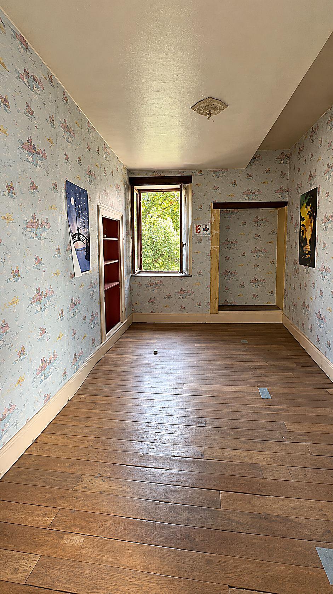
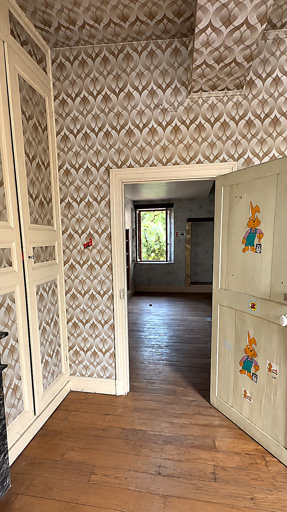
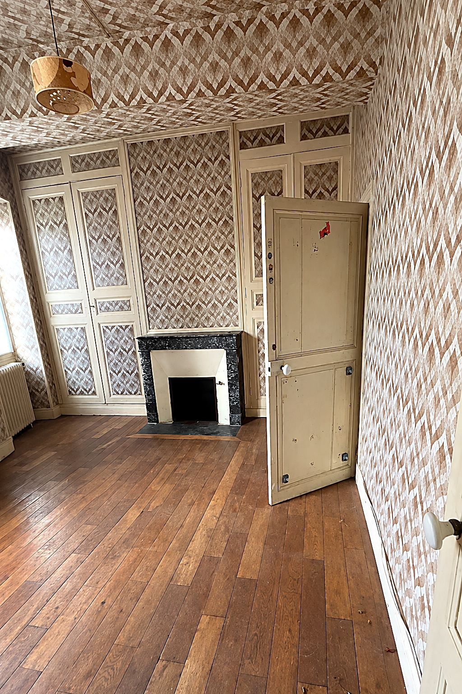
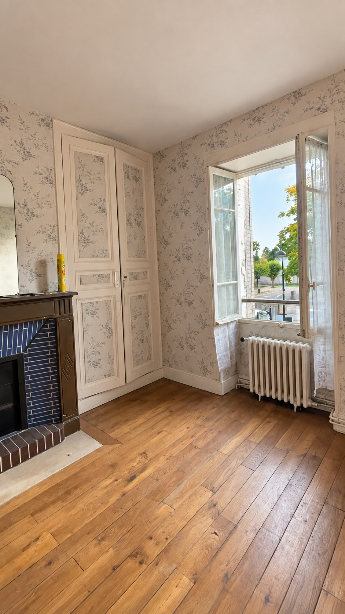
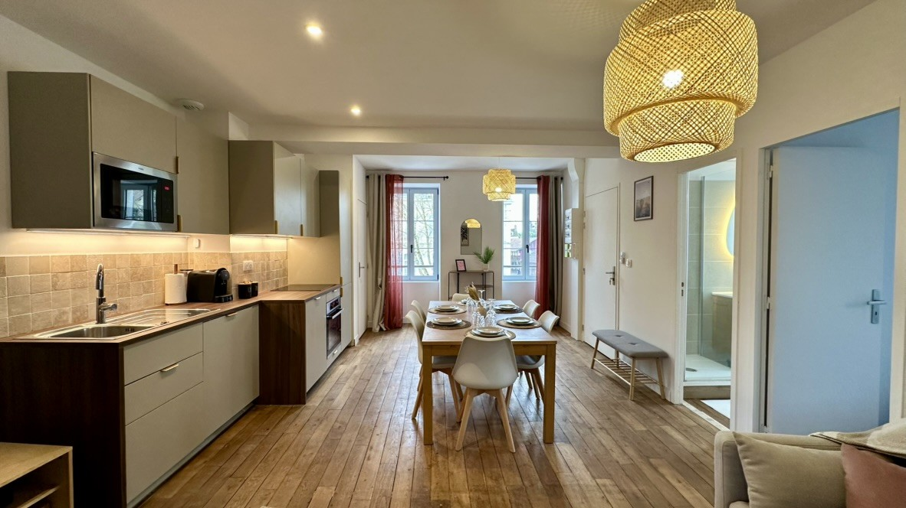
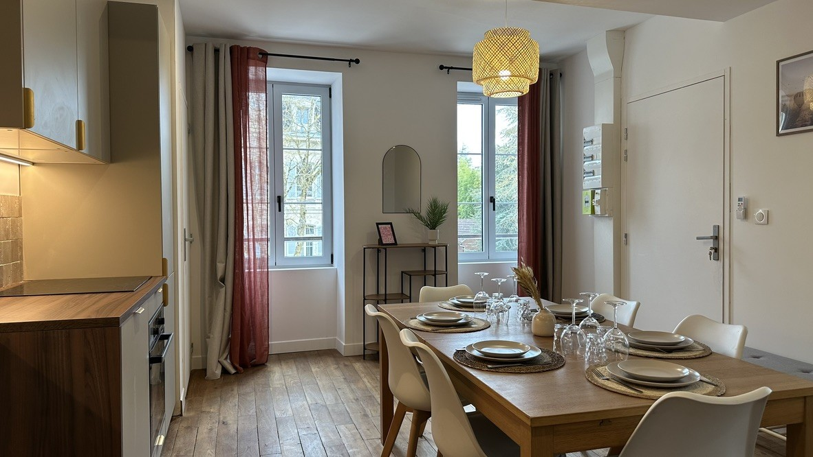
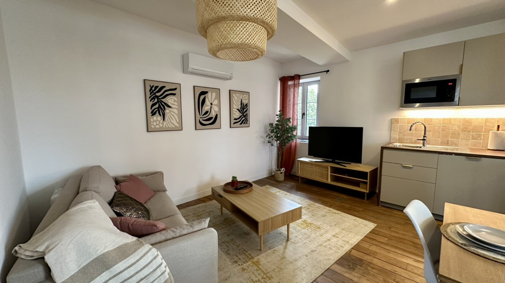
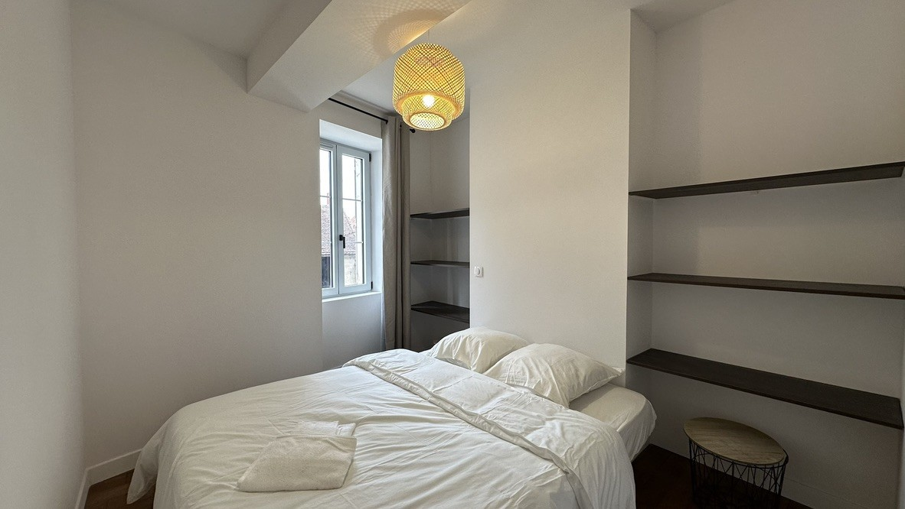
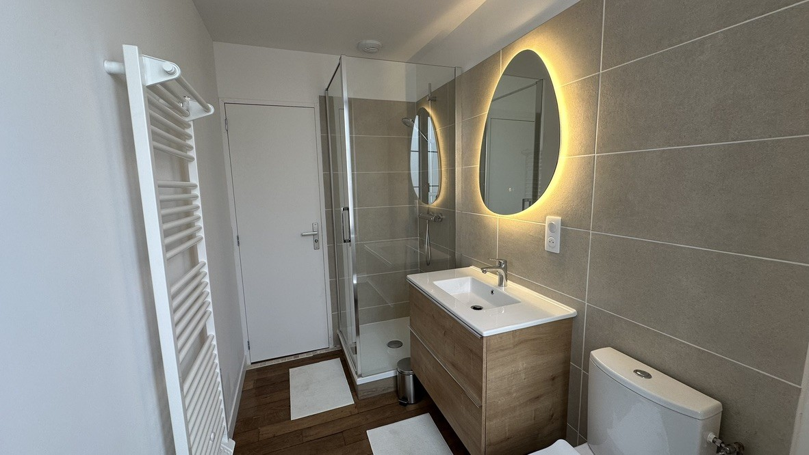

Ce projet porte sur la rénovation de l'appartement Le Canotier, à Chablis. Le logement, marqué par des papiers peints et des revêtements datés, a été remis à neuf en conservant son parquet ancien et ses belles hauteurs sous plafond.
Le séjour s'ouvre désormais sur une cuisine équipée aux teintes douces, avec crédence en carreaux et éclairage intégré. La chambre est dotée d'étagères intégrées, et la salle d'eau, contemporaine, associe douche, meuble vasque en bois et miroir rétroéclairé.
- Lieu
- Chablis, Yonne
- Année
- À préciser
- Programme
- Rénovation d'un appartement
- Mission
- À préciser
- Surface
- À préciser
- Statut
- Travaux achevés




Après travaux
LIVRÉ





Projet suivant
L'Ombrelle — Aménagement de combles à Chablis